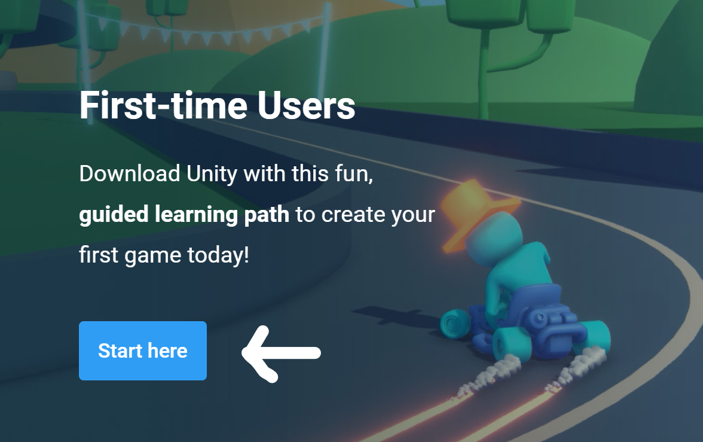
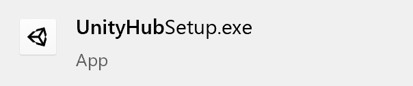
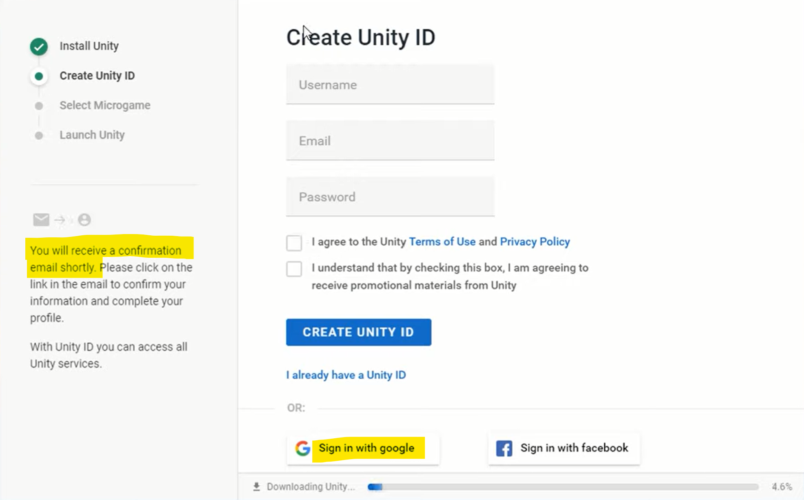
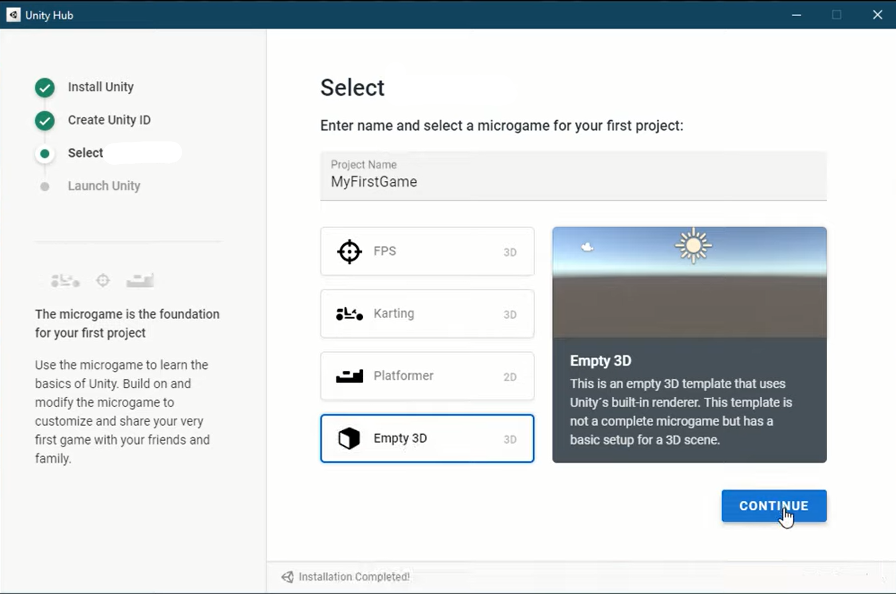

How to Install Unity
First go to store.unity.com/download-nuo.
(Or look up "download unity" on Google)
There you will see two options, click Start here
Agree and download the UnityHubSetup installer.

After that, run the installer by clicking on it. It will guide you through the process of installing Unity Hub, a program we will use to install Unity.
Once you've done that, run UnityHub by clicking the checkbox before you finish (see below picture), or looking up Unity Hub in your apps.
Once UnityHub is open, it will run you through the process of installing Unity.
While Unity is installing, it will ask you to create a Unity Account. Sign in with Google, and use your personal account, not your school account, so that you can get confirmation emails from Unity.
After that, it will ask you to select a template or "microgame", a.k.a a starting project. We'll click Empty 3D since we are going to use a tutorial to make our game from scratch.

After that hit Launch unity to get started. When you're ready, you can move on to the video tutorials.
If you get stuck at any time and have to close the Unity Hub, you can always just open up Unity and make a new project with it (after it has installed).